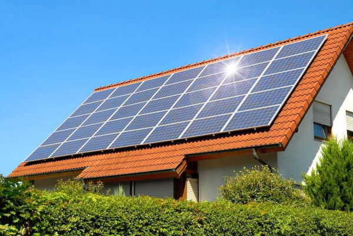

Energia Solar

Energia solar corresponde à energia proveniente da luz e do calor emitidos pelo Sol. Essa fonte de energia pode ser aproveitada de forma fotovoltaica ou térmica, gerando energia elétrica e térmica, respectivamente. Por ser considerada uma fonte de energia limpa, a energia solar é uma das fontes alternativas mais promissoras para obtenção energética.
Como Funciona a Energia Solar?
A energia solar, como o próprio nome indica, refere-se à energia cuja fonte é o Sol. Sua captação pode ser feita por meio de diversas tecnologias, como painéis fotovoltaicos, usinas heliotérmicas e aquecedores solares.
Basicamente, ao ser captada, a luz solar é convertida em energia. Nos painéis fotovoltaicos e nas usinas heliotérmicas, a luz solar é convertida em energia elétrica e térmica. Já no aquecimento solar, a luz solar é convertida em energia térmica.
Tipos de energia solar
A energia solar pode ser usada na produção de energia elétrica por meio de dois sistemas: heliotérmico e fotovoltaico.
Energia solar fotovoltaica
Energia solar fotovoltaica nada mais é do que a conversão direta da radiação solar em energia elétrica. Essa conversão é realizada pelas chamadas células fotovoltaicas, compostas por material semicondutor, normalmente o silício. Ao incidir sobre as células, a luz solar provoca a movimentação dos elétrons do material condutor, transportando-os pelo material até serem captados por um campo elétrico (formado por uma diferença de potencial existente entre os semicondutores). Dessa forma, gera-se eletricidade.
Constituído por painéis, módulos e equipamentos elétricos, o sistema fotovoltaico não exige um ambiente com alta radiação para funcionar. No entanto, a quantidade de energia produzida depende da densidade das nuvens, ou seja, quanto menos nuvens houver no céu, maior será a produção de eletricidade.
Essa forma de obtenção de energia, uma das mais promissoras atualmente, vem crescendo cada vez mais em virtude da redução dos preços e dos incentivos oferecidos para que os países adotem fontes renováveis de energia.
Energia solar heliotérmica
No sistema heliotérmico, a energia proveniente do Sol é transformada em calor, aquecendo, principalmente, a água de residências, hotéis e clubes. Para que isso seja possível, são utilizados painéis solares (espelhos, coletores, helióstatos), que refletem a luz solar, concentrando-a em um único ponto no qual há um receptor.
O receptor é constituído por um líquido, que é aquecido pela luz solar refletida nos painéis. Esse líquido é responsável pelo armazenamento de calor, aquecendo a água nas usinas e, assim, produzindo vapor. Esse vapor movimenta as turbinas nas usinas, provocando o acionamento de geradores, que produzem energia elétrica.
Regiões com grande incidência solar, poucas nuvens e terrenos planos são próprias para produção de energia solar heliotérmica. No Brasil, as regiões Nordeste, Centro-Oeste e Sudeste destacam-se na produção desse tipo de energia solar.
Vantagens e desvantagens
A energia solar é considerada uma fonte renovável de energia, já que é obtida por meio de uma fonte inesgotável: o Sol. Apesar de apresentar inúmeros benefícios para o meio ambiente, o uso dessa fonte energética apresenta também algumas desvantagens. Observe o quadro abaixo:
| Vantagens | Desvantagens |
|---|---|
| Fonte renovável e inesgotável de energia. | Para ser fabricado, um painel solar consome grande quantidade de energia, que, às vezes, é maior do que a própria energia gerada por ele. |
| Não poluente. | Preços elevados em relação à produção de energia por meio de fontes não renováveis. |
| Exige pouca manutenção em suas centrais de produção. | Produção variável de acordo com as condições atmosféricas. |
| Painéis solares cada vez mais eficientes e com custos cada vez mais baixos. | Durante a noite, a energia solar não é produzida. |
| Fonte de energia viável para lugares afastados e de difícil acesso, visto que não necessita de grandes investimentos na manutenção de equipamentos. | Regiões localizadas em latitudes médias/altas produzem pouca energia durante o inverno. |
| Excelente fonte de energia para países tropicais, como o Brasil, cuja radiação solar costuma ser intensa durante boa parte do ano. | O armazenamento desse tipo de energia é pouco eficiente se comparado à energia hidrelétrica, aos combustíveis fósseis e à biomassa. |
| Requer áreas menos extensas para ser produzida. | Requer um sistema eficiente de armazenamento. |
Energia solar no Brasil
O Brasil foi o primeiro país subdesenvolvido a fabricar células fotovoltaicas. Por estar localizado próximo à Linha do Equador, uma região de alta incidência solar, o país conta com um cenário extremamente favorável para a geração energética a partir da energia solar. Além disso, é abundante em silício, matéria-prima usada para fabricação das células fotovoltaicas.
Atualmente, o Brasil possui cerca de 30 mil geradores de energia fotovoltaica. De acordo com a Abrava (Associação Brasileira de Refrigeração, Ar-Condicionado, Ventilação e Aquecimento), existem no país cerca de 500 mil coletores solares residenciais. A previsão é de que Brasil fechará o ano de 2018 com uma capacidade instalada de energia solar próxima aos 2,5 gigawatts, eficiência cerca de 115% maior em relação ao ano anterior.
No país, há ainda alguns projetos a respeito da geração da energia heliotérmica, principalmente na região Nordeste. Em 2010, o Ministério de Minas e Energia e o Ministério da Ciência, Tecnologia e Inovação iniciaram um acordo para a construção de plataforma de pesquisa em Petrolina, Pernambuco, com o objetivo de introduzir a energia solar no mercado brasileiro.
Outro projeto é o SMILE (Sistema Solar Híbrido com Microturbina para Geração de Eletricidade e Cogeração de Calor na Agroindústria), cujo objetivo é construir duas usinas solares para geração de eletricidade integrada às atividades agroindustriais. A previsão é que seja construída uma usina em Pirassununga, no estado São Paulo, e outra em Caiçara do Rio do Vento, no Rio Grande do Norte.
Apesar disso, os custos para geração de energia solar ainda são bastante elevados se comparados a outras fontes de energia, como a hidráulica e os combustíveis fósseis. A instalação de um sistema de energia solar no Brasil custa cerca de 3,5 mil euros por kWp (quilo-watt pico). O elevado custo de instalação, somado à falta de informação a respeito da efetividade dos painéis fotovoltaicos, explica o fato de a energia solar ainda não ter alcançado boa parte das residências, estabelecimentos e indústrias no Brasil. Sendo assim, o país ainda não se configura entre os líderes na produção e no uso de energia solar.
Energia Solar no Mundo
Apesar do crescimento do uso da energia solar nos últimos anos, essa forma energética representa apenas 1,3% da energia elétrica gerada no mundo.
Quando o assunto é uso de energia solar, a China aparece como líder no ranking de países que investem nesse setor, representando cerca de 26% das instalações de energia solar do mundo. Países como Estados Unidos e Japão também se destacam, cada um representando, aproximadamente, 13% da produção.
Veja a seguir a lista dos países líderes em produção de energia solar:
| China | Em 2016, a China representou cerca de 40% da capacidade solar instalada no mundo. | |
|---|---|---|
| Alemanha | É o país com a maior capacidade solar instalada por pessoa, cerca de 500 watts por habitante. | |
| Japão | É o segundo país com a maior capacidade solar instalada por pessoa, com aproximadamente 337 watts por habitante. | |
| Estados Unidos | A energia solar representa cerca de 10% da geração de energia elétrica nesse país. | |
| Itália | Cerca de 7,8% da produção de energia elétrica nesse país é representada pela energia solar. | |